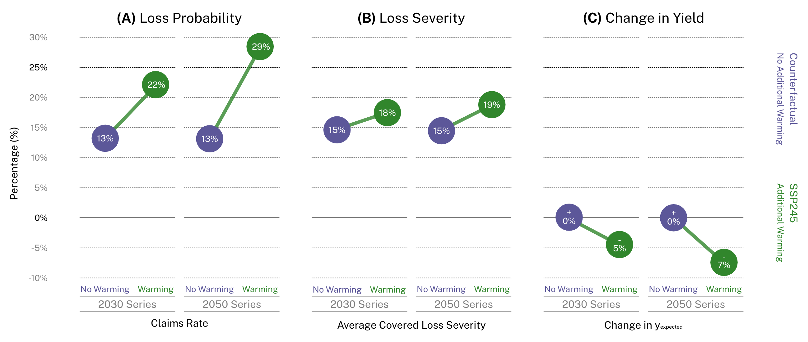

Slides which overview Climate-driven doubling of U.S. maize loss probability: Interactive simulation with neural network Monte Carlo. Published in JDSSV as Pottinger et al 2025 with DOI: 10.52933/jdssv.v5i3.134.
Background
- The costs of crop insurance in the U.S. have already increased by 500% since the early 2000s with annual indemnities reaching $19B in 2022 (Schechinger 2023).
- Retrospective analysis attributes 19% of "national-level crop insurance losses" between 1991 and 2017 to climate warming, an estimate rising to 47% during the drought-stricken 2012 growing season (Diffenbaugh et al. 2021)
Study
- Research question: We want to explore what the future of the Federal Crop Insurance Program might look like under climate change to evaluate how the structures of FCIP might interact with possible changes to yield patterns.
- Data: We used SCYM (Lobell et al 2015) for historic yield estimation and CHC-CMIP6 (Funk et al 2024) under SSP245 at near term (approximately 2030s) and medium term (approximately 2050s).
- Tools: We built interactive visualizations as "explorable explanations" to help support dialogue and user agency to experiment with these ideas.
This section contains interactive components. It will take just a moment to load the lab.
Load Interactives
Loading...
Rates Explorer: Visualization showing how subsidy changes according to different parameters either in an average-based APH or the proposed standard deviation-based APH.
The formulas which can conceptually simulate rate setting:
- overall price = insured unit aph * projected price * county preimum rate * coverage amount
- subsidy = subsidy rate * overall price
- premium = overall price - subsidy
The rates visualization has the following controls:
- Arrow keys: Navigate between different inputs.
- Enter: Select input for editing.
- Tab: Cycle through inputs.
- Escape: Leave the visualization.
Method
- Neural network uses past yield outcomes under past climate conditions as well as how growers may have responded to those conditions to predict future yield outcomes as distributions of yield deltas not point values, allowing us to propagate uncertainty and make probabilistic claims.
- Monte Carlo simulates outcomes both in terms of yield but also in terms of probability of claim under the yield protection form of Multi-Peril Crop Insurance though similar stressors may be present for revenue protection.
- We can run these at risk unit-level resolution sampled from historic values to build geospatial result datasets that incorporate a sense of historic variability under different climate conditions.
This section contains interactive components. It will take just a moment to load the lab.
Load Interactives
Loading...
ML & Hyperparameters: Visualization that allows users to try different neural network configurations and see their validation set performance. How would you balance the error between predicted mean and predicted standard deviation?
This interactive tool allows exploration of hyperparameter combinations for neural network model training.
The hyperparameters visualization has the following controls:
- Click / Tap: Try model with different configurations.
- Escape: Leave the visualization.
Summary
- Simulations see a riskier future: Yield losses which may trigger indemnity claims will not only be more severe around 2050 but also be twice as frequent.
- We anticipate FCIP pressures: the traditional "75% of average APH yield" will likely become riskier to insure than in the past.

Details
- The shape of the "yield deltas" distribution is changing to be less symmetric such that bad years are becoming more common.
- The probability of a loss is increasing even if that loss is not realized each year and there are not consistent decreases in yield.
- These seem to correspond somewhat to drought / heat stress but also different risk units see different variability.
- 12.7% of neighborhoods may see both increased average yields AND increased claims rates simultaneously, highlighting how yield volatility can elevate risk even when overall productivity improves.
This section contains interactive components. It will take just a moment to load the lab.
Load Interactives
Loading...
Predicted Distributions: Visualization that explores the details of the results in depth. Which type of loss on which time horizon are we most worried about?
This interactive explores predicted yield distributions under different climate scenarios.
The distributions visualization has the following controls:
- Click / Tap: Select different scenarios and parameters.
- Escape: Leave the visualization.
Policy
- Some risk units have more variability than others under growing condition stress. This may have to do with intrinsic properties but it may also have to do with differences in practices which provide resilience.
- The current structure of MPCI is based on average with yield exclusions which does not necessarily financially incentivize stability as it encourages growers to drive up yields even at the expense of variability.
- Switching to a standard deviation based coverage level can achieve claims rates similar to the current average-based coverage level today but keeps those claims rates from dramatically increasing in the future as growing conditions evolve.
- This is practice-agnostic, allowing growers flexibility to achieve stability that can complement practice-specific efforts but possible offer mechanisms to mitigate issues with practice-specific approaches explored by prior work (Connor et al 2021).
This section contains interactive components. It will take just a moment to load the lab.
Load Interactives
Loading...
Claims & Policy: Visualization that explores alternative policy formulations and their expected outcomes under different conditions.
This interactive explores policy alternatives and their implications for claims rates.
The claims visualization has the following controls:
- Click / Tap: Switch between different policy scenarios.
- Escape: Leave the visualization.
Future
- Revenue Protection is quite difficult to model but would be useful for painting a broader picture.
- We explored practice-agnostic tweaks to FCIP formulations but we could further explore these results in practice-specific contexts.
- Undertaking work to better understand policy opportunities including through 508h.
This section contains interactive components. It will take just a moment to load the lab.
Load Interactives
Loading...
Neighborhoods: Exploration of individual neighborhood-level outcomes with options for geographic visualization.
This interactive provides geographic visualization of neighborhood-level outcomes.
The neighborhoods visualization has the following controls:
- Click / Drag: Navigate the map and select regions.
- Escape: Leave the visualization.